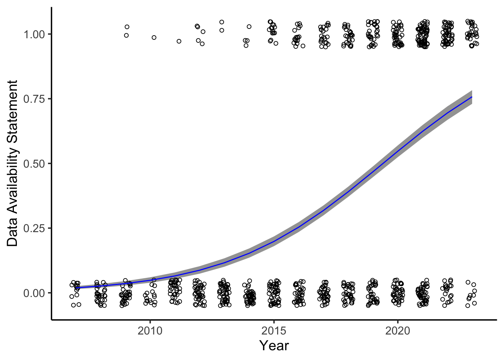

Trends, challenges, and opportunities in open biologging data
Get involved!
Do you use biologging in your research? Are you interested in open science? Do you wish sharing data was easier?
Come collaborate with a great team of biologging scientists! Please fill out this interest form and we’ll contact you about joining the team.
Abstract
Biologgers are animal-borne devices that remotely observe the individual’s location, behavior, physiology, and immediate environment. Over the last sixty years, biologging has become an invaluable tool for ecology, conservation, environmental science, and related fields. In recent decades, efforts such as Movebank have provided essential data standards and repositories to support data archiving and sharing. But despite these biologging cyberinfrastructure developments, the general state of open data within the community remains unknown, and there are indications that a majority of tracking data remain inaccessible. Even basic questions, such as how many species have been instrumented and how often are various sensors deployed, are currently unanswerable. A systematic review of the instruments, species, and data availability of biologging studies is thus essential to support ongoing and future efforts to promote collaborative data sharing and curation efforts. We are reviewing biologging studies published between 2007-2023 to test hypotheses pertaining to trends in biologging data. We predict open biologging data practices have increased over time, though open data availability remains under 50%. We also predict that spatial biologging data (e.g. GPS) is shared more openly than other types of biologging data (e.g. accelerometers), and that terrestrial biologging studies share data openly more often than marine biologging studies.
Additional information
We are planning to submit a registered report to Nature Ecology and Evolution soon. This will pre-register our methods and planned analyses, which improves transparency and reduces publication bias (O’Dea et al. 2021). Our current draft is available here.
We will not begin assessing open data practices of biologging studies until our registered report is accepted. But in the meantime we have begun our initial classification of biologging studies, recording taxa, sensors, and other baseline information. You can see our progress here.
References
O’Dea, Rose E., Timothy H. Parker, Yung En Chee, Antica Culina, Szymon M. Drobniak, David H. Duncan, Fiona Fidler, et al. 2021. “Towards Open, Reliable, and Transparent Ecology and Evolutionary Biology.” BMC Biology 19 (1). https://doi.org/10.1186/s12915-021-01006-3.